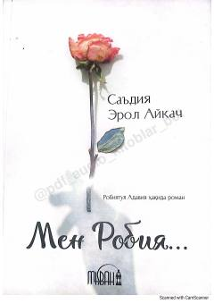

MRBuyuk avliyoa Robiyatul Adaviya hayoti haqida ta'sirchan tarixiy roman.
Bu kitob mashhur islom avliyosi Robiyatul Adaviya haqida yozilgan tarixiy-badiiy roman bo'lib, muallifa Saʼdiya Erol Aykach tomonidan yaratilgan. Muallifa Robiyatul Adaviya hayoti va karomatlari haqidagi ko'plab manba va rivoyatlarni o'rganib, ularni bir asarga jamlagan. Roman o'quvchini buyuk avliyoning ichki dunyosi va ruhiy sayohati bilan tanishtiradi.